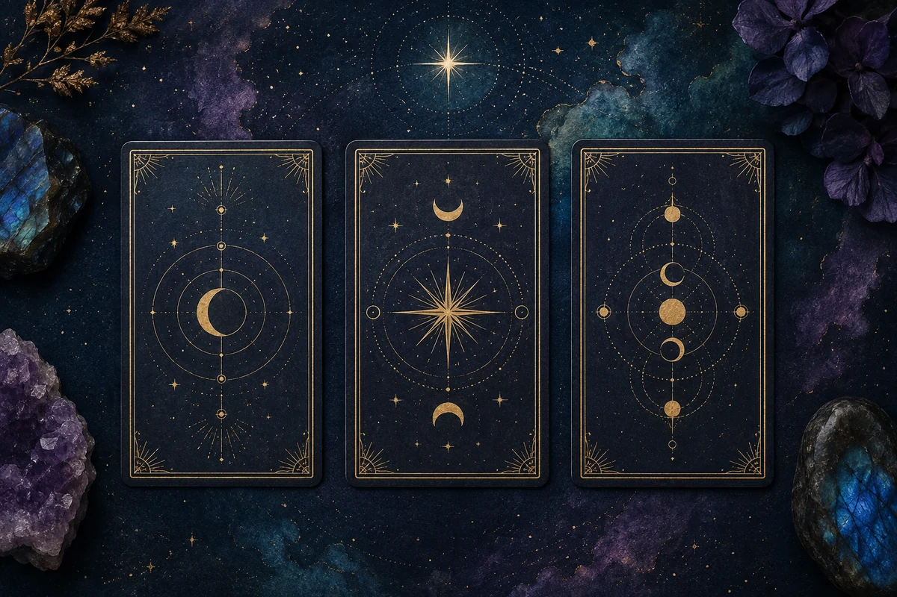

Inner North Journal may earn a commission from approved links. Our guidance stays grounded in the experience, visible terms, and practical fit—not guaranteed outcomes.

FIELD NOTE 002Two three-card readings, with two different openings.
Explore with clarityComparisonsGuided experiencesReflection tools
Latest comparison
A clearer way to choose.
We compare experiences that may look similar from a distance, then focus on what you actually do, what the seller says, and what to check before paying.
Both ask you to choose three cards. Compare an urgent mystery-led invitation with a visible Past, Present, and Future spread—without treating either as a literal prediction.
FORMAT 01Mystery-first revealFORMAT 02Structured spread
Interactive card readings examined by sequence, visible framing, purchase path, and the difference between reflective prompts and unsupported prediction claims.
We do not need to flatten the mystery out of a spiritual experience. We do need to separate what an experience contains from what a seller promises it will change.
01
Begin with the experience
We explain whether you listen, read, answer questions, receive a report, or move through an interactive prompt.
02
Read the visible terms
Price, delivery, support, refunds, billing, and personal-information requests matter as much as the pitch.
03
Keep claims in context
Seller language stays attributed. Reflection tools are not medical care, financial advice, certainty, or guaranteed transformation.
Begin here
Choose the experience, not the promise.
Start with our latest field note: a grounded look at two interactive three-card tarot readings.